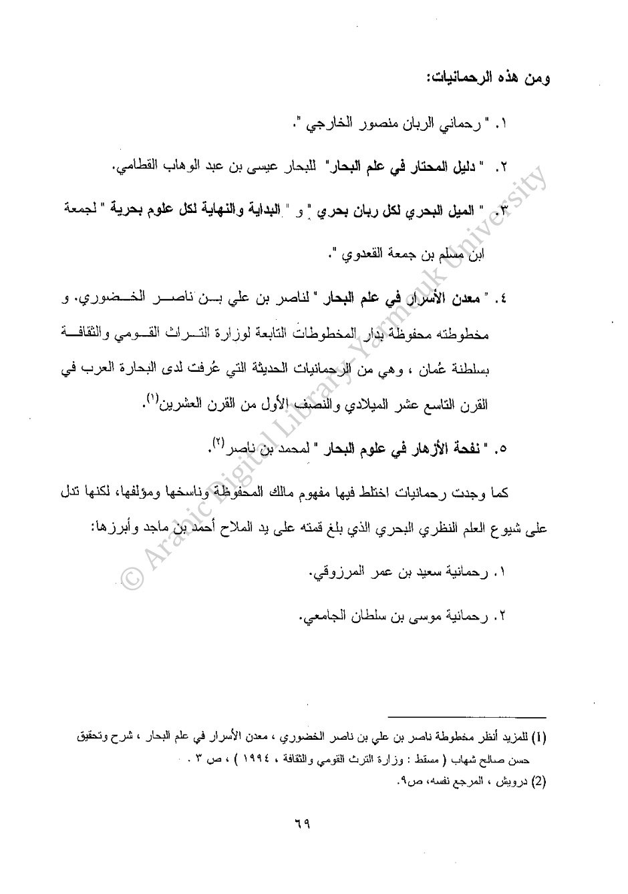

Master’s thesis, 2007 · Pages from a master’s thesis by Mohammed bin Omar bin Mubarak Al-Ghailani, supervised by Dr Walid Subhi Al-Arid, Department of History, Yarmouk University, Jordan, 2007
Naval History of Omani Sur: Dalil Al-Muhtar among the navigators’ books of Sur
What it is
On the navigators of Sur in Oman under Sultan Faisal bin Turki (1888 to 1913). Page 68 says an Omani navigator’s manuscript corrected some of what is in «Dalil Al-Muhtar fi Ilm Al-Bihar, by the Kuwaiti navigator Eissa Al-Qatami». Page 69 lists among the rahmaniyat, the navigators’ guide books, known to the mariners of Sur: «Dalil Al-Muhtar fi Ilm Al-Bihar by the navigator Eissa bin Abdulwahab Al-Qatami».
Why it matters
Shows that Eissa’s book was known and used by the navigators of Sur in Oman, where he died in 1929.
Page copies



Notes
The name of the navigator whose manuscript corrected Dalil Al-Muhtar is on page 67, which is not yet on the site. The watermark across the pages is the Yarmouk University Arabic Digital Library’s own.
Others named
Sources
Mohammed bin Omar bin Mubarak Al-Ghailani, Tarikh Madinat Sur Al-Umaniya Al-Bahri fi Ahd Al-Sultan Faisal bin Turki (1888 to 1913), MA thesis, Yarmouk University, 2007, pages 68 and 69
How this text was made: Copied from the Yarmouk University Arabic Digital Library.
Open in the interactive site